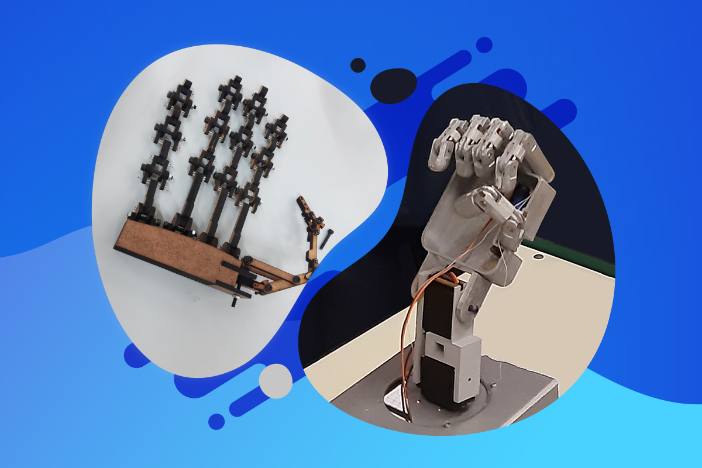
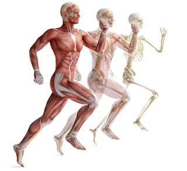
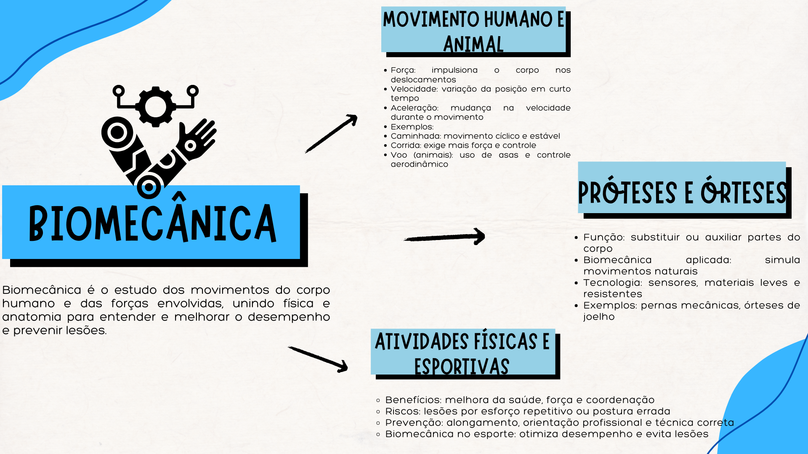

Pesquisa e Conteúdo
A biomecânica aplica princípios da física para entender e aprimorar os movimentos do corpo humano. Isso é essencial no desenvolvimento de próteses e órteses, pois, ao analisar forças, torques e resistência dos materiais, os engenheiros conseguem criar dispositivos que imitam os movimentos naturais, com articulações fluidas e mínimo atrito. Um exemplo disso são as próteses mioelétricas, que utilizam sinais elétricos dos músculos para gerar movimentos precisos, melhorando significativamente a mobilidade e qualidade de vida dos usuários.
Além disso, a prática de exercícios físicos fortalece os músculos e aumenta a capacidade de gerar força, contribuindo para um melhor desempenho em diversas tarefas. A física, por meio da biomecânica, também é essencial para entender e otimizar os movimentos esportivos, ajudando tanto na melhora da performance quanto na prevenção de lesões. Ao analisar forças de impacto, ângulos articulares e distribuição de carga, é possível identificar movimentos incorretos que poderiam causar entorses, distensões e outras lesões.
A física, portanto, está presente desde o simples ato de caminhar até o desenvolvimento de tecnologias avançadas. Conceitos como força, aceleração e velocidade nos ajudam a compreender melhor o corpo humano e suas limitações. Essa compreensão não se limita aos laboratórios, pois influencia nosso cotidiano, contribuindo para uma vida mais saudável, segura e consciente. Reconhecer a importância da física nos movimentos humanos abre caminho para inovações e melhorias na nossa qualidade de vida.
Mapa Mental
Confira o mapa mental abaixo:
